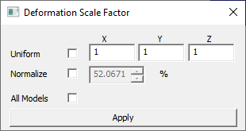
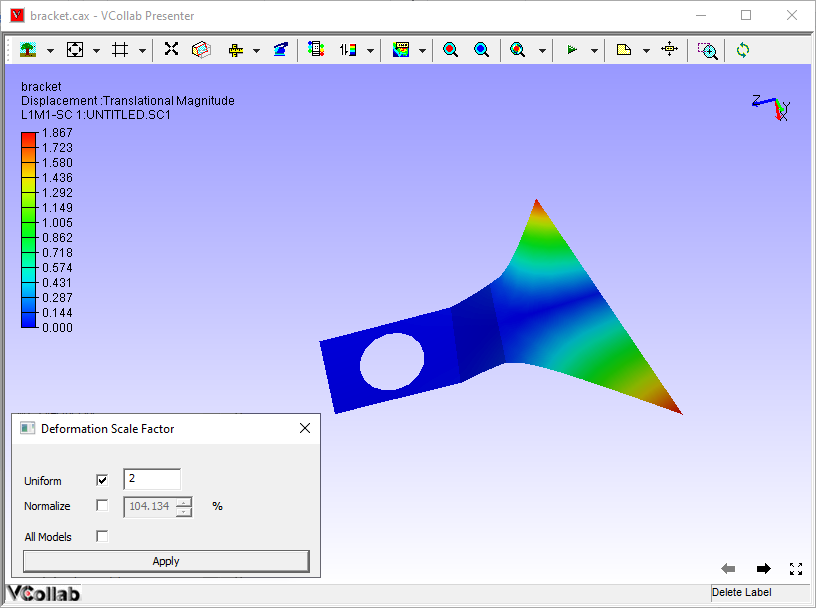
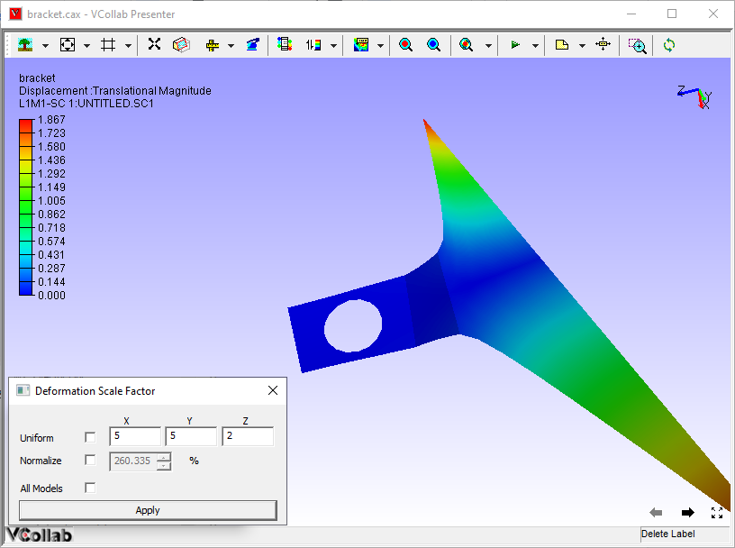
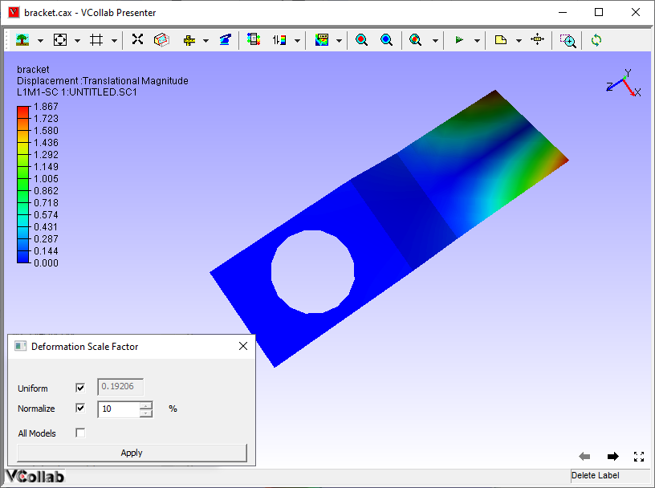
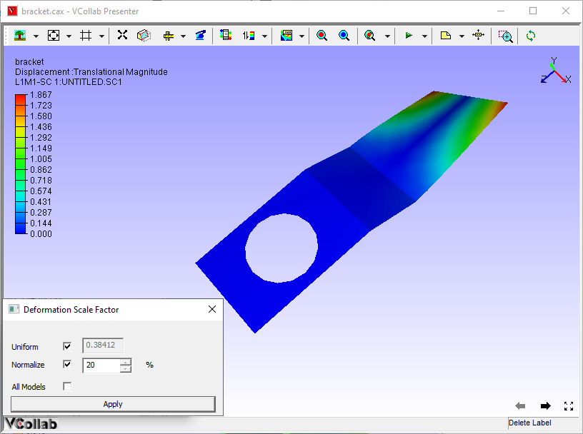
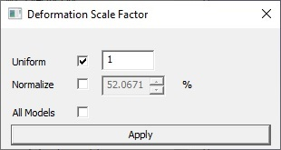

Scale Factor
Users can scale deformation of a model in each coordinate axis using the Scale Factor option provided under CAE menu
Context Menu

Scale Factor Panel

The fields and options present in the Deformation Scale Factor dialog are explained below.
| Uniform | By checking this option, the values entered by the user will be applied to all X, Y and Z directions. |
| Normalize | Users can scale up/down with respect to model bounding percentage. The actual scale factor is accordingly updated.By default, deformation is scaled to 10% of model bounding radius. |
| All Models | Applies scale factor to all merged models. |
| Apply | The modified scale factors will be applied on the model and visible in the viewer. |
Note:
Deformation is normalized (max - normalization) and mapped with model bounding sphere radius. By default normalized deformation is scaled to 10 percent of bounding sphere radius.
To apply True scale uncheck Normalize option and set scale factor in ‘Uniform’ option as 1. Uniform means, constant scaling in X,Y and Z directions.
If the Uniform option is unchecked, the dialog shows its X, Y and Za factors as below. here scaling will vary in each direction. If the model is planar or linear, check the Uniform option for better visualization of deformation.

Steps to scale a model
- Right click in the viewer window to open the context menu
- Click CAE | Scale Factor to open the Deformation Scale Factor dialog
- Check Uniform option to scale model uniformly.
- Change the value.
- Click Apply and view changes.

- Uncheck Uniform option to scale model in each axis with different values.
- Change scale values for each axis.
- Click Apply and view changes.

Steps to scale deformation for Mode case animation data
- Load a mode case CAX file.
- Select CAE | Animate.
- Select CAE | Scale Factor
- Normalize option will be checked.
- The default value for mode case data is 10 % and for complex eigen data is 1 %,

- Change the value to 20 % and click apply.

- Notice the change.
- Uncheck Normalize option.

Usual scale factor option will be enabled. Enter 1 and click apply for true scale.